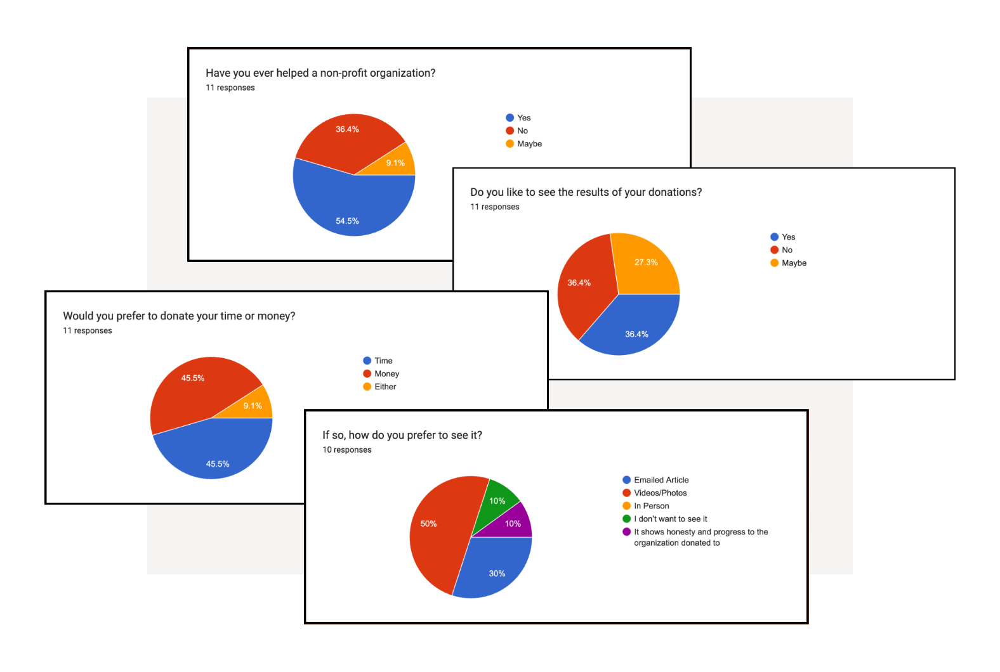

<!-- <!DOCTYPE html>
<html lang="en">
<head>
    <meta charset="UTF-8">
    <meta http-equiv="X-UA-Compatible" content="IE=edge">
    <meta name="viewport" content="width=device-width, initial-scale=1.0">
    <title>Case Study</title>
    <link rel="stylesheet" href="https://cdn.jsdelivr.net/npm/bootstrap@4.6.2/dist/css/bootstrap.min.css" integrity="sha384-xOolHFLEh07PJGoPkLv1IbcEPTNtaed2xpHsD9ESMhqIYd0nLMwNLD69Npy4HI+N" crossorigin="anonymous">
</head>
<body>
<header>
   <button class="home">Home</button>
   <button class="about">About</button>
   <button class="contact">Contact</button>
   <button class="resume">Resume</button>
  <section class="hero">
    <h1> Non-Profit Redesign </h1>
    <h2> Navajo Santa, "because everyone deserves a miracle." </h2>
  </section>
</header>
  <section>
    <p> Goal: Improve communication on the site to assist in the organizations cause.</p>
    <p> This was a project done in a boot camp, our goal was to improve the site's overall comunication in order to lead the user along their journey to helping families in need.</p>
  </section>
  
  <Section>
  <h2> Problem</h2>
  <p> Many users didn't know how to help or what the Navajo people need. The also din't know how to interact with the site to be able to help if they did become interested.</p>
  <h2> solution</h2>
  <p> We redesigned the hero to be a call to action, and redesigned the home jpage to be focused on guiding the user on their journey through navigation, buttons, and news posts.</p>
  </Section>
  <Section>
  <h2> Tools</h2>
  <ul>
    <li> Miro</li>
    <li> Figma</li>
    <Li> Krita</Li>
  </ul>
  <h2> Team</h2>
  <ul>
    <li> 4 UX Students</li>
  </ul>
  <h2> My Role</h2>
  <ul>
    <li> Layout Design</li>
    <li> Wireframing</li>
    <li> Icon Design</li>
    <li> User Research</li>
  </ul>
  <h2> Timeline</h2>
  <ul>
   <li> Overall: 2 Weeks</li>
   <li> Discovery & Research: 4 Days</li>
   <li> Design & Testing: 10 Days</li>
  </ul>
  </Section>
  <h1> My Design Process</h1>
<section>
  <section>
    <button> 1</button>
    <h2> Surveying</h2>
  </section>
  <section>
    <button> 2</button>
    <h2> User Persona</h2>
  </section>
  <section>
    <button> 3</button>
    <h2> Sketches</h2>
  </section>
  <section>
    <button> 4</button>
    <h2> Wireframes</h2>
  </section>
  <section>
    <button> 5</button>
    <h2> Testing</h2>
  </section>
  <section>
    <button> 6</button>
    <h2> UI Components</h2>
  </section>
</section>
  <section>
    <h2> Surveys</h2>
    <p> After we decided what non-profit organization website we were going to design we decided to conduct a survey in order to determine what was lacking for the user and what we could do better. Here are some results from the 11 responses to our survey comprised of open ended and multiple choice questions:</p>
    <ul>
        <li>The hero (Santa in the snow) was the first thing that most users noticed.</li>
        <li>Few of the users felt engaged with the cause through information given on site.</li>
        <li>User's wanted to see upcoming events and how they could participate.</li>
        <li>User's didn't find the page's design, such as colors and layout, to be appealing.</li>
    </ul>
  
  </section>
  <script src="https://cdn.jsdelivr.net/npm/bootstrap@5.3.0-alpha3/dist/js/bootstrap.bundle.min.js" integrity="sha384-ENjdO4Dr2bkBIFxQpeoTz1HIcje39Wm4jDKdf19U8gI4ddQ3GYNS7NTKfAdVQSZe" crossorigin="anonymous"></script>
</body>
</html> -->